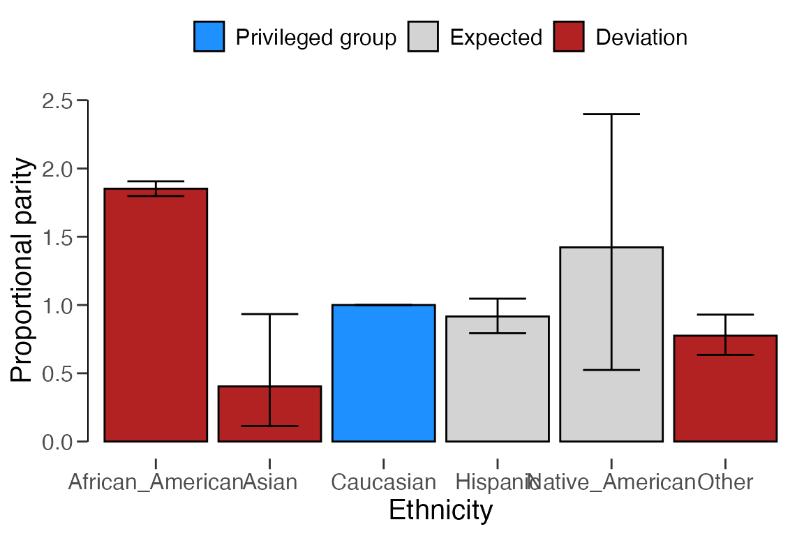
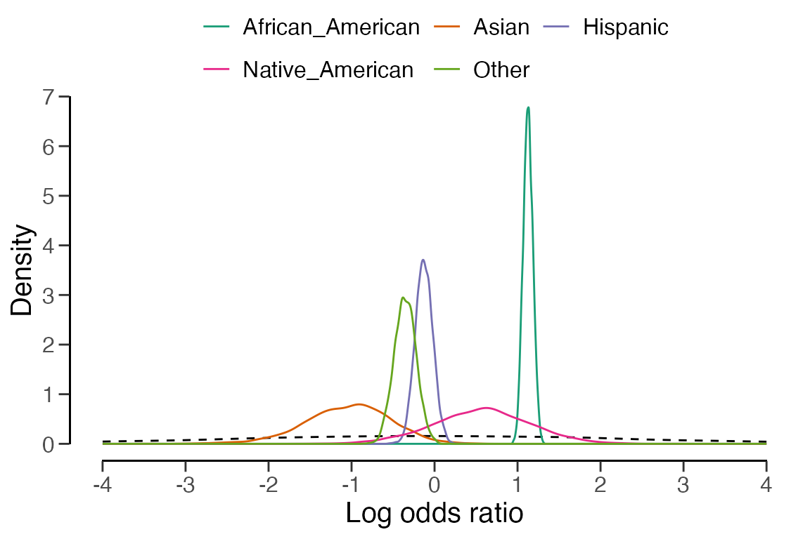
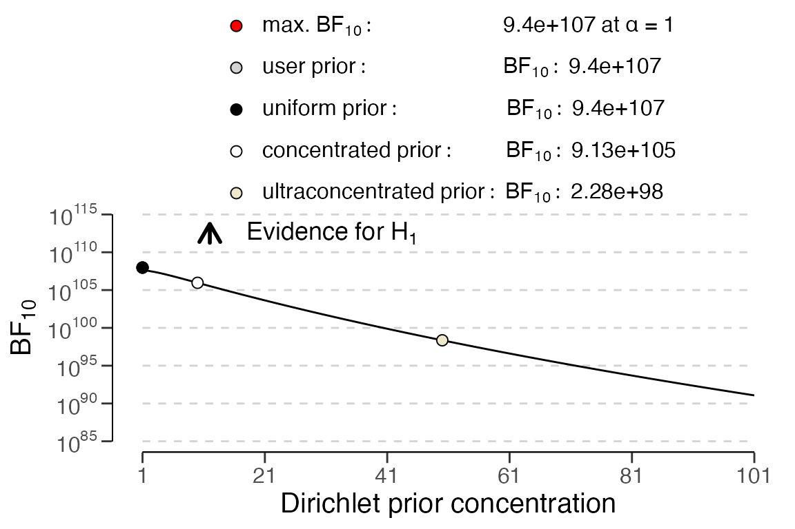

Introduction
Welcome to the ‘Algorithmic fairness’ vignette of the
jfa package. In this vignette you can find a detailed
example of how you can use the model_fairness() function
provided by the package.
Function: model_fairness()
The model_fairness() function provides a method to
assess fairness in algorithmic decision-making systems by computing
various model-agnostic metrics based on the observed and predicted
labels in a data set. Calculated metrics include demographic parity,
proportional parity, predictive rate parity, accuracy parity, false
negative rate parity, false positive rate parity, true positive rate
parity, negative predicted value parity, and specificity parity (Calders & Verwer, 2010; Chouldechova, 2017;
Feldman et al., 2015; Friedler et al., 2019; Zafar et al.,
2017).
Example:
To illustrate how to use the model_fairness() function,
we will use a well-known data set called COMPAS. The COMPAS
(Correctional Offender Management Profiling for Alternative Sanctions)
software is is a case management and decision support tool used by some
U.S. courts to assess the likelihood of a defendant becoming a
recidivist (repeated offender).
The compas data is included in the package and contains
predictions of the COMPAS software for several cases. The data can be
loaded with data("compas") and contains for each defendant,
whether the defendant did commit a crime within two years after the
court case (TwoYrRecidivism), some personal characteristics
like gender and ethnicity, and whether the software predicted the
defendant to be a recidivist (Predicted).
## TwoYrRecidivism AgeAboveFoutryFive AgeBelowTwentyFive Gender Misdemeanor
## 4 no no no Male yes
## 5 yes no no Male no
## 7 no no no Female yes
## 11 no no no Male no
## 14 no no no Male yes
## 24 no no no Male yes
## Ethnicity Predicted
## 4 Other no
## 5 Caucasian yes
## 7 Caucasian no
## 11 African_American no
## 14 Hispanic no
## 24 Other noWe will investigate whether the algorithm is fair with respect to the
sensitive attribute Ethnicity. Considering the context, a
positive prediction means that a defendant is classified as a
reoffender, and a negative prediction means that a defendant is
classified as a non-reoffender. The fairness metrics offer information
on whether there are any disparities in the algorithm’s predictions
across different ethnic groups. By calculating and reviewing these
metrics, we can get an indication of whether the algorithm exhibits any
discriminatory behavior towards specific ethnic groups. If substantial
disparities exist, we may need to investigate further and potentially
modify the algorithm to ensure fairness in its predictions.
Before starting, let’s briefly explain the foundation of all fairness
metrics: the confusion matrix. This matrix presents observed versus
predicted labels, shedding light on the algorithm’s prediction mistakes.
Comprising the confusion matrix are the true positives (TP), false
positives (FP), true negatives (TN), and false negatives (FN). To
illustrate, the confusion matrix pertaining to the
African_American group is displayed below. For example,
there are 629 people in this group that are incorrectly predicted to be
a reoffender, which represents a false positive in the confusion
matrix.
Predicted = no
|
Predicted = yes
|
|
|---|---|---|
TwoYrRecidivism = no
|
885 (TN) |
629 (FP) |
TwoYrRecidivism = yes
|
411 (FN) |
1250 (TP) |
For illustrative purposes, let’s interpret the full set of fairness metrics for the African American, Asian, and Hispanic groups in comparison to the privileged group (Caucasian). See Pessach & Shmueli (2022) for a more detailed explanation of some of these metrics. However, note that not all fairness measures are equally appropriate in all audit situations. The decision tree below aids the auditor with choosing which measure is best for the situation at hand (Büyük, 2023).

-
Demographic parity (Statistical parity): Compares the number of positive predictions (i.e., reoffenders) between each unprivileged (i.e., ethnic) group and the privileged group. Note that, since demographic parity is not a proportion, statistical inference about its equality to the privileged group is not supported.
The formula for the number of positive predictions is \(P = TP + FP\), and the demographic parity for unprivileged group \(i\) is given by \(DP = \frac{P_{i}}{P_{privileged}}\).
model_fairness( data = compas, protected = "Ethnicity", target = "TwoYrRecidivism", predictions = "Predicted", privileged = "Caucasian", positive = "yes", metric = "dp" )## ## Classical Algorithmic Fairness Test ## ## data: compas ## n = 6172 ## ## sample estimates: ## African_American: 2.7961 ## Asian: 0.0059524 ## Hispanic: 0.22173 ## Native_American: 0.0074405 ## Other: 0.12649Interpretation:
- African American: The demographic parity for African Americans compared to Caucasians is 2.7961, indicating that for these data there are nearly three times more African Americans predicted as reoffenders by the algorithm than Caucasians.
- Asian: The demographic parity for Asians is very close to zero (0.0059524), indicating that there are many less Asians (4) that are predicted as reoffenders in these data than there are Caucasians (672). Naturally, this can be explained because of the lack of Asian people (31) in the data.
- Hispanic: The demographic parity for Hispanics is 0.22173, meaning that there are about five times less Hispanics predicted as reoffenders in these data than that there are Caucasians.
-
Proportional parity (Disparate impact): Compares the proportion of positive predictions of each unprivileged group to that in the privileged group. For example, in the case that a positive prediction represents a reoffender, proportional parity requires the proportion of predicted reoffenders to be similar across ethnic groups.
The formula for the proportion of positive predictions is \(PP = \frac{TP + FP}{TP + FP + TN + FN}\), and the proportional parity for unprivileged group \(i\) is given by \(\frac{PP_{i}}{PP_{privileged}}\).
model_fairness( data = compas, protected = "Ethnicity", target = "TwoYrRecidivism", predictions = "Predicted", privileged = "Caucasian", positive = "yes", metric = "pp" )## ## Classical Algorithmic Fairness Test ## ## data: compas ## n = 6172, X-squared = 522.28, df = 5, p-value < 2.2e-16 ## alternative hypothesis: fairness metrics are not equal across groups ## ## sample estimates: ## African_American: 1.8521 [1.7978, 1.9058], p-value = < 2.22e-16 ## Asian: 0.4038 [0.1136, 0.93363], p-value = 0.030318 ## Hispanic: 0.91609 [0.79339, 1.0464], p-value = 0.26386 ## Native_American: 1.4225 [0.52415, 2.3978], p-value = 0.3444 ## Other: 0.77552 [0.63533, 0.92953], p-value = 0.0080834 ## alternative hypothesis: true odds ratio is not equal to 1Interpretation:
- African American: The proportional parity for African Americans compared to Caucasians is 1.8521. This indicates that African Americans are approximately 1.85 times more likely to get a positive prediction than Caucasians. Again, this suggests potential bias in the algorithm’s predictions against African Americans. The p-value is smaller than .05, indicating that the null hypothesis of proportional parity should be rejected (Fisher, 1970).
- Asian: The proportional parity for Asians is 0.4038, indicating that their positive prediction rate is lower than for Caucasians. This may suggest potential underestimation of reoffenders among Asians.
- Hispanic: The proportional parity for Hispanics is 0.91609, suggesting that their positive prediction rate is close to the privileged group. This indicates relatively fair treatment of Hispanics in the algorithm’s predictions.
This is a good time to show the
summary()andplot()functions associated with themodel_fairness()function. Let’s examine the previous function call again, but instead of printing the output to the console, this time we store the output inxand run thesummary()andplot()functions on this object.x <- model_fairness( data = compas, protected = "Ethnicity", target = "TwoYrRecidivism", predictions = "Predicted", privileged = "Caucasian", positive = "yes", metric = "pp" ) summary(x)## ## Classical Algorithmic Fairness Test Summary ## ## Options: ## Confidence level: 0.95 ## Fairness metric: Proportional parity (Disparate impact) ## Model type: Binary classification ## Privileged group: Caucasian ## Positive class: yes ## ## Data: ## Sample size: 6172 ## Unprivileged groups: 5 ## ## Results: ## X-squared: 522.28 ## Degrees of freedom: 5 ## p-value: < 2.22e-16 ## ## Comparisons to privileged (P) group: ## Proportion Parity ## Caucasian (P) 0.31954 [0.29964, 0.33995] - ## African_American 0.59181 [0.57448, 0.60897] 1.8521 [1.7978, 1.9058] ## Asian 0.12903 [0.036302, 0.29834] 0.4038 [0.1136, 0.93363] ## Hispanic 0.29273 [0.25352, 0.33437] 0.91609 [0.79339, 1.0464] ## Native_American 0.45455 [0.16749, 0.76621] 1.4225 [0.52415, 2.3978] ## Other 0.24781 [0.20302, 0.29702] 0.77552 [0.63533, 0.92953] ## Odds ratio p-value ## Caucasian (P) - - ## African_American 3.0866 [2.7453, 3.4726] < 2.22e-16 ## Asian 0.31561 [0.079942, 0.91095] 0.030318 ## Hispanic 0.88138 [0.70792, 1.0939] 0.26386 ## Native_American 1.7739 [0.42669, 7.0041] 0.3444 ## Other 0.70166 [0.53338, 0.91633] 0.0080834 ## ## Model performance: ## Support Accuracy Precision Recall F1 score ## Caucasian 2103 0.6585830 0.5773810 0.4720195 0.5194110 ## African_American 3175 0.6724409 0.6652475 0.7525587 0.7062147 ## Asian 31 0.7419355 0.5000000 0.2500000 0.3333333 ## Hispanic 509 0.6817289 0.5906040 0.4656085 0.5207101 ## Native_American 11 0.6363636 0.6000000 0.6000000 0.6000000 ## Other 343 0.6938776 0.6117647 0.4193548 0.4976077plot(x, type = "estimates")
-
Predictive rate parity (Equalized odds): Compares the overall positive prediction rates (e.g., the precision) of each unprivileged group to the privileged group.
The formula for the precision is \(PR = \frac{TP}{TP + FP}\), and the predictive rate parity for unprivileged group \(i\) is given by \(PRP = \frac{PR_{i}}{PR_{privileged}}\).
model_fairness( data = compas, protected = "Ethnicity", target = "TwoYrRecidivism", predictions = "Predicted", privileged = "Caucasian", positive = "yes", metric = "prp" )## ## Classical Algorithmic Fairness Test ## ## data: compas ## n = 6172, X-squared = 18.799, df = 5, p-value = 0.002095 ## alternative hypothesis: fairness metrics are not equal across groups ## ## sample estimates: ## African_American: 1.1522 [1.1143, 1.1891], p-value = 5.4523e-05 ## Asian: 0.86598 [0.11706, 1.6149], p-value = 1 ## Hispanic: 1.0229 [0.87836, 1.1611], p-value = 0.78393 ## Native_American: 1.0392 [0.25396, 1.6406], p-value = 1 ## Other: 1.0596 [0.86578, 1.2394], p-value = 0.5621 ## alternative hypothesis: true odds ratio is not equal to 1Interpretation:
- African American: The predictive rate parity for African Americans is 1.1522. This suggests that the precision for African Americans is approximately 1.15 times higher than for Caucasians, which indicates potential ‘favoritism’ towards African Americans in the overall positive predictions made by the algorithm.
- Asian: The predictive rate parity for Asians is 0.86598, indicating that their precision is lower than for Caucasians. This suggests potential underestimation of reoffenders among Asians by the algorithm.
- Hispanic: The predictive rate parity for Hispanics is 1.0229, suggesting their overall positive prediction rate is very close to that of the privileged group (Caucasians). This indicates relatively fair treatment in the algorithm’s overall positive predictions.
-
Accuracy parity: Compares the accuracy of each unprivileged group’s predictions with the privileged group.
The formula for the accuracy is \(A = \frac{TP + TN}{TP + FP + TN + FN}\), and the accuracy parity for unprivileged group \(i\) is given by \(AP = \frac{A_{i}}{A_{privileged}}\).
model_fairness( data = compas, protected = "Ethnicity", target = "TwoYrRecidivism", predictions = "Predicted", privileged = "Caucasian", positive = "yes", metric = "ap" )## ## Classical Algorithmic Fairness Test ## ## data: compas ## n = 6172, X-squared = 3.3081, df = 5, p-value = 0.6526 ## alternative hypothesis: fairness metrics are not equal across groups ## ## sample estimates: ## African_American: 1.021 [0.99578, 1.0458], p-value = 0.29669 ## Asian: 1.1266 [0.841, 1.3384], p-value = 0.44521 ## Hispanic: 1.0351 [0.97074, 1.0963], p-value = 0.34691 ## Native_American: 0.96626 [0.46753, 1.3525], p-value = 1 ## Other: 1.0536 [0.975, 1.127], p-value = 0.21778 ## alternative hypothesis: true odds ratio is not equal to 1Interpretation:
- African American: The accuracy parity for African Americans is 1.021, suggesting their accuracy is very similar to the privileged group (Caucasians). This indicates fair treatment concerning overall accuracy.
- Asian: The accuracy parity for Asians is 1.1266, suggesting their accuracy is slightly higher than for Caucasians, indicating potential favoritism in overall accuracy.
- Hispanic: The accuraty parity for Hispanics is 1.0351, suggesting their accuracy is slightly higher than for Caucasians, indicating potential favoritism in overall accuracy.
-
False negative rate parity (Treatment equality): Compares the false negative rates of each unprivileged group with the privileged group.
The formula for the false negative rate is \(FNR = \frac{FN}{TP + FN}\), and the false negative rate parity for unprivileged group \(i\) is given by \(FNRP = \frac{FNR_{i}}{FNR_{privileged}}\).
model_fairness( data = compas, protected = "Ethnicity", target = "TwoYrRecidivism", predictions = "Predicted", privileged = "Caucasian", positive = "yes", metric = "fnrp" )## ## Classical Algorithmic Fairness Test ## ## data: compas ## n = 6172, X-squared = 246.59, df = 5, p-value < 2.2e-16 ## alternative hypothesis: fairness metrics are not equal across groups ## ## sample estimates: ## African_American: 0.46866 [0.42965, 0.50936], p-value = < 2.22e-16 ## Asian: 1.4205 [0.66128, 1.8337], p-value = 0.29386 ## Hispanic: 1.0121 [0.87234, 1.1499], p-value = 0.93562 ## Native_American: 0.7576 [0.099899, 1.6163], p-value = 0.67157 ## Other: 1.0997 [0.92563, 1.2664], p-value = 0.28911 ## alternative hypothesis: true odds ratio is not equal to 1Interpretation:
- African American: The parity of false negative rates (FNRs) for African Americans compared to Caucasians is 0.46866. A value lower than 1 suggests that African Americans are less likely to be falsely classified as non-reoffenders, indicating potential bias against this group in this aspect.
- Asian: The parity for Asians is 1.4205, indicating that they are more likely to be falsely classified as non-reoffenders compared to Caucasians, suggesting potential underestimation of reoffenders among Asians.
- Hispanic: The FNR parity for Hispanics is 1.0121, indicating relatively similar rates as the privileged group (Caucasians), suggesting fair treatment in this aspect.
-
False positive rate parity: Compares the false positive rates (e.g., for non-reoffenders) of each unprivileged group with the privileged group.
The formula for the false positive rate is \(FPR = \frac{FP}{TN + FP}\), and the false positive rate parity for unprivileged group \(i\) is given by \(FPRP = \frac{FPR_{i}}{FPR_{privileged}}\).
model_fairness( data = compas, protected = "Ethnicity", target = "TwoYrRecidivism", predictions = "Predicted", privileged = "Caucasian", positive = "yes", metric = "fprp" )## ## Classical Algorithmic Fairness Test ## ## data: compas ## n = 6172, X-squared = 179.76, df = 5, p-value < 2.2e-16 ## alternative hypothesis: fairness metrics are not equal across groups ## ## sample estimates: ## African_American: 1.8739 [1.7613, 1.988], p-value = < 2.22e-16 ## Asian: 0.39222 [0.048308, 1.2647], p-value = 0.19944 ## Hispanic: 0.85983 [0.67237, 1.0736], p-value = 0.25424 ## Native_American: 1.5035 [0.19518, 3.5057], p-value = 0.61986 ## Other: 0.67967 [0.47835, 0.92493], p-value = 0.019574 ## alternative hypothesis: true odds ratio is not equal to 1Interpretation:
- African American: The false positive rate parity for African Americans is 1.8739. This indicates that African Americans are approximately 1.87 times more likely to be falsely predicted as reoffenders than Caucasians. This suggests potential bias in the algorithm’s false positive predictions in favor of African Americans.
- Asian: The parity for Asians is 0.39222, indicating that they are less likely to be falsely predicted as reoffenders compared to Caucasians. This suggests potential fair treatment of Asians in false positive predictions.
- Hispanic: The false positive rate parity for Hispanics is 0.85983, suggesting they are less likely to be falsely predicted as reoffenders compared to Caucasians. This indicates potential fair treatment of Hispanics in false positive predictions.
-
True positive rate parity (Equal opportunity): Compares the true positive rates (e.g., for reoffenders) of each unprivileged group with the privileged group.
The formula for the true positive rate is \(TPR = \frac{TP}{TP + FN}\), and the true positive rate parity for unprivileged group \(i\) is given by \(TPRP = \frac{TPR_{i}}{TPR_{privileged}}\).
model_fairness( data = compas, protected = "Ethnicity", target = "TwoYrRecidivism", predictions = "Predicted", privileged = "Caucasian", positive = "yes", metric = "tprp" )## ## Classical Algorithmic Fairness Test ## ## data: compas ## n = 6172, X-squared = 246.59, df = 5, p-value < 2.2e-16 ## alternative hypothesis: fairness metrics are not equal across groups ## ## sample estimates: ## African_American: 1.5943 [1.5488, 1.638], p-value = < 2.22e-16 ## Asian: 0.52964 [0.067485, 1.3789], p-value = 0.29386 ## Hispanic: 0.98642 [0.83236, 1.1428], p-value = 0.93562 ## Native_American: 1.2711 [0.31065, 2.0068], p-value = 0.67157 ## Other: 0.88843 [0.70202, 1.0832], p-value = 0.28911 ## alternative hypothesis: true odds ratio is not equal to 1Interpretation:
- African American: The true positive rate parity for African Americans is 1.5943. This indicates that African Americans are approximately 1.59 times more likely to be correctly predicted as reoffenders than Caucasians. This suggests potential favoritism towards African Americans in true positive predictions made by the algorithm.
- Asian: The parity for Asians is 0.52964, indicating that they are less likely to be correctly predicted as reoffenders compared to Caucasians. This suggests potential underestimation of reoffenders among Asians by the algorithm.
- Hispanic: The true positive rate parity for Hispanics is 0.98642, suggesting their true positive rate is very close to that of the privileged group (Caucasians). This indicates relatively fair treatment in the algorithm’s true positive predictions.
-
Negative predicted value parity: Compares the negative predicted value (e.g., for non-reoffenders) of each unprivileged group with that of the privileged group.
The formula for the negative predicted value is \(NPV = \frac{TN}{TN + FN}\), and the negative predicted value parity for unprivileged group \(i\) is given by \(NPVP = \frac{NPV_{i}}{NPV_{privileged}}\).
model_fairness( data = compas, protected = "Ethnicity", target = "TwoYrRecidivism", predictions = "Predicted", privileged = "Caucasian", positive = "yes", metric = "npvp" )## ## Classical Algorithmic Fairness Test ## ## data: compas ## n = 6172, X-squared = 3.6309, df = 5, p-value = 0.6037 ## alternative hypothesis: fairness metrics are not equal across groups ## ## sample estimates: ## African_American: 0.98013 [0.94264, 1.0164], p-value = 0.45551 ## Asian: 1.1163 [0.82877, 1.3116], p-value = 0.52546 ## Hispanic: 1.0326 [0.96161, 1.0984], p-value = 0.43956 ## Native_American: 0.95687 [0.31975, 1.3732], p-value = 1 ## Other: 1.0348 [0.95007, 1.112], p-value = 0.46084 ## alternative hypothesis: true odds ratio is not equal to 1Interpretation:
- African American: The negative predicted value parity for African Americans is 0.98013. A value close to 1 indicates that the negative predicted value for African Americans is very similar to the privileged group (Caucasians). This suggests fair treatment in predicting non-reoffenders among African Americans.
- Asian: The negative predicted value parity for Asians is 1.1163, indicating that their negative predicted value is slightly higher than for Caucasians. This could suggest potential favoritism towards Asians in predicting non-reoffenders.
- Hispanic: The negative predicted value parity for Hispanics is 1.0326, suggesting that their negative predicted value is slightly higher than for Caucasians. This indicates potential favoritism towards Hispanics in predicting non-reoffenders.
-
Specificity parity (True negative rate parity): Compares the specificity (true negative rate) of each unprivileged group with the privileged group.
The formula for the specificity is \(S = \frac{TN}{TN + FP}\), and the specificity parity for unprivileged group \(i\) is given by \(SP = \frac{S_{i}}{S_{privileged}}\).
model_fairness( data = compas, protected = "Ethnicity", target = "TwoYrRecidivism", predictions = "Predicted", privileged = "Caucasian", positive = "yes", metric = "sp" )## ## Classical Algorithmic Fairness Test ## ## data: compas ## n = 6172, X-squared = 179.76, df = 5, p-value < 2.2e-16 ## alternative hypothesis: fairness metrics are not equal across groups ## ## sample estimates: ## African_American: 0.75105 [0.71855, 0.78314], p-value = < 2.22e-16 ## Asian: 1.1731 [0.92461, 1.2711], p-value = 0.19944 ## Hispanic: 1.0399 [0.97904, 1.0933], p-value = 0.25424 ## Native_American: 0.85657 [0.28624, 1.2293], p-value = 0.61986 ## Other: 1.0912 [1.0214, 1.1486], p-value = 0.019574 ## alternative hypothesis: true odds ratio is not equal to 1Interpretation:
- African American: The specificity parity for African Americans is 0.75105. A value lower than 1 indicates that the specificity for African Americans is lower than for Caucasians. This suggests potential bias in correctly identifying non-reoffenders among African Americans.
- Asian: The specificity parity for Asians is 1.1731, indicating their specificity is slightly higher than for Caucasians. This could suggest potential favoritism in correctly identifying non-reoffenders among Asians.
- Hispanic: The specificity parity for Hispanics is 1.0399, suggesting that their specificity is very close to the privileged group. This indicates relatively fair treatment in correctly identifying non-reoffenders among Hispanics.
Bayesian Analysis
For all metrics except demongraphic parity, Bayesian inference is
supported and provides credible intervals and Bayes factors (Jamil et al., 2017). Like in the other
functions in jfa, performing a Bayesian analysis using a
default prior can be achieved by setting prior = TRUE.
x <- model_fairness(
data = compas,
protected = "Ethnicity",
target = "TwoYrRecidivism",
predictions = "Predicted",
privileged = "Caucasian",
positive = "yes",
metric = "pp",
prior = TRUE
)
print(x)##
## Bayesian Algorithmic Fairness Test
##
## data: compas
## n = 6172, BF₁₀ = 3.497e+110
## alternative hypothesis: fairness metrics are not equal across groups
##
## sample estimates:
## African_American: 1.8473 [1.7943, 1.9008], BF₁₀ = 2.8881e+81
## Asian: 0.34791 [0.17218, 0.91485], BF₁₀ = 3.0278
## Hispanic: 0.91193 [0.80059, 1.0403], BF₁₀ = 0.1127
## Native_American: 0.89975 [0.65344, 2.2292], BF₁₀ = 0.54521
## Other: 0.78076 [0.64145, 0.92384], BF₁₀ = 2.5057
## alternative hypothesis: true odds ratio is not equal to 1Bayesian inference measures evidence using the Bayes factor \(BF_{01}\), which quantifies the evidence in favor of algorithmic fairness (i.e., equal fairness metrics across all groups) over algorithmic bias or \(BF_{10}\), which quantifies the evidence in favor of algorithmic bias over algorithmic fairness. By default, jfa reports \(BF_{10}\), but \(BF_{01} = \frac{1}{BF_{10}}\). The resulting Bayes factor in favor of rejection of the null hypothesis of equality (\(BF_{10}\)) is shown in the output above. As can be seen, \(BF_{10}\) > 1000, which indicates extreme evidence in favor of bias between the groups.
In a Bayesian analysis, the auditor specifies a prior distribution
that can incorporate relevant audit information. The prior distribution
for this analysis is expressed on the log odds ratio and can be adjusted
by setting prior = 1 (the default), or providing a number
> 1 representing the prior concentration parameter. The larger the
concentration parameter, the more the prior distribution is concentrated
around zero, meaning equal metrics are assumed to be more likely. The
prior and posterior distributions on the log odds ratio can be
visualized via the plot() function using
type = "posterior", see the figure below.
plot(x, type = "posterior")
You can check the robustness of the Bayes factor to the choice of
prior distribution via the plot() function using
type = "robustness", see the figure below.
plot(x, type = "robustness")